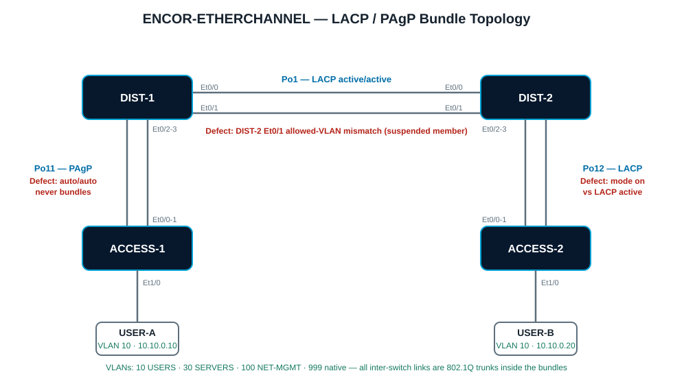

Overview
This lab is focused on EtherChannel behavior at a CCNP ENCOR level. You will audit broken bundles, repair LACP and PAgP negotiation, fix a member-port consistency defect, tune the load-balancing hash, and prove the result with show etherchannel output interpretation — the exact skill the exam tests with exhibit questions.
The startup configuration is intentionally defective: none of the three bundles is fully healthy when the lab boots. Your job is to read the flags, explain the cause, and fix each one with minimal changes.
Learning Objectives
- Interpret
show etherchannel summaryflags: SU, SD, P, I, s, w, D. - Explain which mode combinations form a bundle: LACP active/active, active/passive (not passive/passive); PAgP desirable/desirable, desirable/auto (not auto/auto); static on/on only with on/on.
- Repair a bundle where one side runs mode
onagainst an LACP peer. - Identify a member port suspended by an allowed-VLAN consistency mismatch.
- Configure and verify the EtherChannel load-balancing hash.
Platform Standard
- Use Cisco Modeling Labs IOL-L2 nodes for every switch in this lab.
- All bundle member links are 802.1Q trunks with native VLAN 999; the trunk design is already correct except where a defect says otherwise.
- Changing a channel-group mode usually requires
no channel-groupon the member first — removing and re-adding is expected, not a failure. - Use
write memoryonly after the verification tasks pass.
Topology
Two distribution switches connect over a two-link LACP peer bundle (Po1). ACCESS-1 uplinks to DIST-1 over a two-link PAgP bundle (Po11). ACCESS-2 uplinks to DIST-2 over a two-link LACP bundle (Po12). One Alpine host per access switch provides end-to-end ping targets in VLAN 10.

Bundle and VLAN Plan
| Bundle | Members | Protocol and Target Modes | Allowed VLANs |
|---|---|---|---|
| Po1 | DIST-1 Et0/0-1 ↔ DIST-2 Et0/0-1 | LACP — active / active | 10,30,100,999 |
| Po11 | DIST-1 Et0/2-3 ↔ ACCESS-1 Et0/0-1 | PAgP — desirable (DIST-1) / auto (ACCESS-1) | 10,100,999 |
| Po12 | DIST-2 Et0/2-3 ↔ ACCESS-2 Et0/0-1 | LACP — active / active | 10,100,999 |
| VLAN | Name | Purpose |
|---|---|---|
| 10 | USERS | USER-A and USER-B endpoints (10.10.0.0/24) |
| 30 | SERVERS | Carried on Po1 only |
| 100 | NET-MGMT | Switch SVIs 10.100.0.11-.14 |
| 999 | NATIVE-BLACKHOLE | Native VLAN on every trunk |
Task 1: Baseline Audit
Before changing anything, determine the true state of all three bundles. Every flag in show etherchannel summary is a fact — read them, do not guess.
Requirements
- Record the state of Po1, Po11, and Po12 on all four switches.
- For each bundle that is not healthy (SU with all members P), name the defect class: negotiation-mode incompatibility, protocol mismatch, or member-consistency violation.
- Find all three defects before configuring anything.
Commands
show etherchannel summary
show etherchannel 1 detail
show lacp neighbor
show pagp neighbor
show interfaces port-channel 1
show spanning-tree summaryExpected Findings
- Po1 is up (SU) but one DIST-2 member shows
s— suspended for a config inconsistency. - Po11 never forms: both PAgP sides are
auto, so neither side initiates negotiation; members showI(stand-alone) or the Po stays down (SD). - Po12: DIST-2 runs mode
onwhile ACCESS-2 runs LACPactive— ACCESS-2 receives no LACPDUs and suspends its members; watch for the channel-misconfig STP guard.
Flag key (memorize this): S Layer 2, U in use, P bundled in port-channel, I stand-alone, s suspended, w waiting to be aggregated, D down. A healthy two-member bundle reads Po1(SU) with Et0/0(P) Et0/1(P).
Task 2: Repair the LACP Bundles (Po1 and Po12)
Both LACP bundles must negotiate with LACP on both sides — mode on is not acceptable anywhere in this design.
Requirements
- Convert the DIST-2 side of Po12 from mode
onto LACPactive. Remember: remove the channel-group from the members first, then re-add with the correct mode. - Leave ACCESS-2 as LACP
active(active/active is the most robust pairing). - Do not touch the Po1 suspended member yet — that is Task 4.
- Verify both bundles with LACP neighbor output, not just the summary.
Conversion Template (DIST-2)
configure terminal
interface range Ethernet0/2-3
no channel-group 12
channel-group 12 mode active
endVerification
show etherchannel summary
show lacp neighbor
show lacp internal
show interfaces port-channel 12Expected Output
DIST-2#show etherchannel summary | include Po12
12 Po12(SU) LACP Et0/2(P) Et0/3(P)
DIST-2#show lacp neighbor
...
Channel group 12 neighbors
Port Flags Priority Dev ID Age key Number
Et0/2 SA 32768 aabb.cc00.xxxx ...
Et0/3 SA 32768 aabb.cc00.xxxx ...Task 3: Form the PAgP Bundle (Po11)
Po11 must use PAgP. Both sides currently run auto, and auto/auto never forms because neither side initiates.
Requirements
- Change the DIST-1 side to PAgP
desirable; leave ACCESS-1 asauto(desirable/auto forms a bundle and proves you know the matrix). - Do not convert Po11 to LACP — the design requires PAgP here.
- Verify with PAgP neighbor output and confirm both members show
P.
Configuration (DIST-1)
configure terminal
interface range Ethernet0/2-3
no channel-group 11
channel-group 11 mode desirable
endVerification
show etherchannel summary
show pagp neighbor
show pagp internalExpected Output
DIST-1#show etherchannel summary | include Po11
11 Po11(SU) PAgP Et0/2(P) Et0/3(P)
DIST-1#show pagp neighbor
Channel group 11 neighbors
Port Flags Partner Name Partner Device ID Partner Port
Et0/2 SC ACCESS-1 aabb.cc00.xxxx Et0/0
Et0/3 SC ACCESS-1 aabb.cc00.xxxx Et0/1Mode matrix (exam favorite): LACP — active+active ✓, active+passive ✓, passive+passive ✗. PAgP — desirable+desirable ✓, desirable+auto ✓, auto+auto ✗. Static — on+on only; on never negotiates with LACP or PAgP.
Task 4: Troubleshoot the Suspended Member (Po1)
Po1 is operational but only one member is forwarding. EtherChannel requires member ports to match the bundle configuration — speed, duplex, switchport mode, native VLAN, and allowed VLAN list.
Symptom
DIST-2#show etherchannel summary | include Po1(
1 Po1(SU) LACP Et0/0(P) Et0/1(s)
DIST-2#show interfaces ethernet0/1 trunk
Port Vlans allowed on trunk
Et0/1 10,100,999Requirements
- Identify why Et0/1 on DIST-2 is suspended by comparing its switchport config against Et0/0 and Port-channel1.
- Correct only the mismatched attribute — do not rebuild the bundle.
- Confirm both members return to
Pand traffic can hash over both links.
Verification
show etherchannel summary
show etherchannel 1 detail | include Probable|suspend
show interfaces port-channel 1 trunkDesign note: A suspended member does not bring the bundle down — Po1 stays up on the surviving member, which makes this defect easy to miss until the "redundant" link fails. Always compare member configs, not just bundle state.
Task 5: Load Balancing and End-to-End Validation
Finish by tuning the hash and proving the data plane works across all three bundles.
Requirements
- Set the EtherChannel load-balancing method to
src-dst-ipon all four switches. - Verify the configured method and explain why a single flow never exceeds one member link's bandwidth.
- From USER-A (10.10.0.10), ping USER-B (10.10.0.20) — the path crosses Po11, Po1, and Po12.
- Confirm MAC learning lands on the port-channel interfaces, not the physical members.
Configuration
configure terminal
port-channel load-balance src-dst-ip
endValidation Commands
show etherchannel load-balance
show etherchannel summary
show mac address-table dynamic vlan 10
show spanning-tree vlan 10Completion Criteria
- Po1, Po11, Po12 all show (SU) with every member (P).
- LACP and PAgP neighbors are visible on the correct bundles.
- Load balancing reports src-dst-ip on all switches.
- USER-A pings USER-B; MAC entries for both hosts point at Po interfaces.
- Spanning tree sees one logical link per bundle (no blocked members inside a bundle).
Grade Entire Lab
Use these checks to evaluate whether the lab is complete.
Solutions
Task 2 solution: convert Po12 to LACP active (DIST-2)
configure terminal
interface range Ethernet0/2-3
no channel-group 12
channel-group 12 mode active
end
! ACCESS-2 already runs channel-group 12 mode activeTask 3 solution: form Po11 with PAgP (DIST-1)
configure terminal
interface range Ethernet0/2-3
no channel-group 11
channel-group 11 mode desirable
end
! ACCESS-1 stays channel-group 11 mode auto — desirable/auto formsTask 4 solution: un-suspend the Po1 member (DIST-2)
configure terminal
interface Ethernet0/1
switchport trunk allowed vlan 10,30,100,999
end
! The member list now matches Et0/0 and Port-channel1, so Et0/1 returns to (P)Task 5 solution: load balancing
! On all four switches
configure terminal
port-channel load-balance src-dst-ip
endExpected final verification
DIST-2#show etherchannel summary
Flags: D - down P - bundled in port-channel
I - stand-alone s - suspended
...
Group Port-channel Protocol Ports
------+-------------+-----------+-----------------------------------------------
1 Po1(SU) LACP Et0/0(P) Et0/1(P)
12 Po12(SU) LACP Et0/2(P) Et0/3(P)
DIST-1#show etherchannel summary | include Po
1 Po1(SU) LACP Et0/0(P) Et0/1(P)
11 Po11(SU) PAgP Et0/2(P) Et0/3(P)
DIST-1#show etherchannel load-balance
EtherChannel Load-Balancing Configuration:
src-dst-ipLab complete: All three bundles negotiate correctly (no mode on), the suspended member is restored, load balancing is deterministic, and you can read every EtherChannel flag the exam can throw at you.